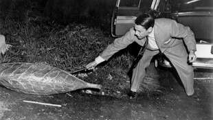
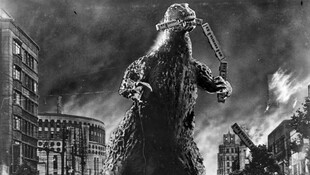
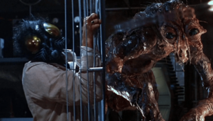

The 1950s reflected post-World War II anxieties, particularly fears of nuclear destruction and extraterrestrial invasion. Science fiction merged with horror, introducing paranoia-driven narratives and terrifying monsters.
This Cold War-era horror film depicted an alien menace terrorizing scientists in a remote outpost. Its themes of paranoia, distrust, and survival reflected societal fears of Communist infiltration, emphasizing the tension between logic and hysteria in the face of an unknown, shape-shifting threat.
A chilling allegory on conformity and lost identity, this film follows a doctor uncovering a silent invasion as townspeople are replaced by soulless alien copies. Its eerie atmosphere, rising paranoia, and social critique on mass control cement it as a classic.
Japan’s most famous monster, Godzilla, was a direct metaphor for nuclear destruction following World War II. The film’s harrowing imagery of a devastated Tokyo resonated deeply with audiences, turning Godzilla into a lasting cultural icon.
A tragic tale of scientific hubris, The Fly tells the story of a scientist whose teleportation experiment goes horribly wrong, merging him with a housefly. Its body horror elements and tragic undertones made it a standout of the decade.
| Nombre | ID | Carrera | Correo |
|---|---|---|---|
| Maria Jose Arévalo | 1094044725 | Jurisprudencia | mariaj.arevalo@urosario.edu.co |
| Daniela Cortes Rodriguez | 1095550727 | Jurisprudencia | daniela.cortesro@urosario.edu.co |